Honolulu Travel Guide
Urban center featuring a tropical climate, coastal plains, volcanic ridges, and a blend of cultural institutions, historic landmarks, and modern infrastructure.
Top Locations


-400.jpg)

Places to See in Honolulu
Downtown Honolulu
Urban district combining historic landmarks, government institutions, cultural venues, and diverse architectural styles from neoclassical to modernist.
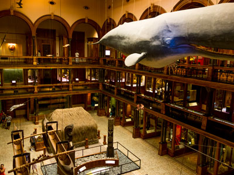
Daniel Ramirez from Honolulu, USA, CC BY 2.0, via Wikimedia Commons; Image Size Adjusted
Bishop Museum
Hawaiʻi’s largest museum dedicated to natural and cultural history, featuring extensive exhibits on Polynesian voyaging, Hawaiian royalty, and Pacific biodiversity.
-400.jpg)
Cliff from Arlington, Virginia, USA, CC BY 2.0, via Wikimedia Commons; Image Size Adjusted
Honpa Hongwanji Mission of Hawaii
Headquarters of Jōdo Shinshū Buddhism in Hawaiʻi, offering spiritual services, cultural education, and community programs across a network of temples.


.jpg){kind=link}
.jpg){kind=link}

Ho'omaluhia Botanical Garden
Expansive rainforest garden featuring global tropical plant collections, scenic walking trails, and serene views of the Koʻolau Mountains.
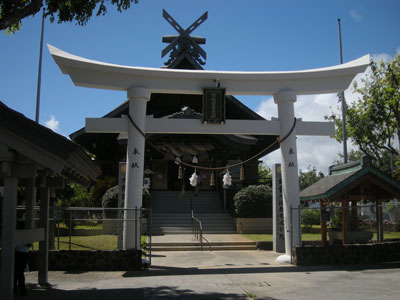
Bittercup, CC BY-SA 3.0, via Wikimedia Commons; Image Size Adjusted

Izumo Taishakyo Mission of Hawaii
Traditional Shinto shrine offering blessings, cultural ceremonies, and spiritual services in a serene setting near Honolulu’s Chinatown.
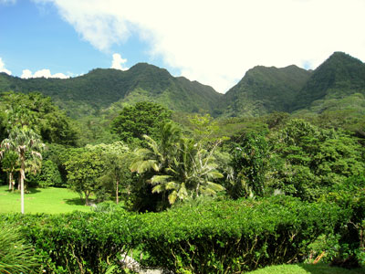
Daderot, Public domain, via Wikimedia Commons; Image Size Adjusted

Lyon Arboretum
Rainforest botanical garden and research facility featuring tropical plant collections, hiking trails, and conservation programs in a lush valley setting.
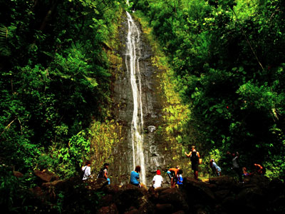
Edmund Garman from Salem, Oregon, USA, CC BY 2.0, via Wikimedia Commons; Image Size Adjusted
.jpg){kind=link}
Manoa Falls
Scenic rainforest trail leading to a 150-foot waterfall, offering a moderately easy hike through lush tropical vegetation and bamboo groves.
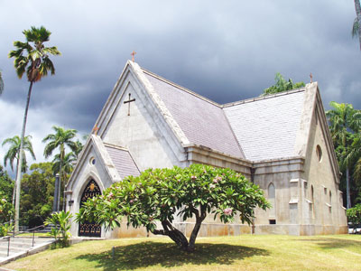
Daderot., CC BY-SA 3.0, via Wikimedia Commons; Image Size Adjusted

Mauna 'Ala / Royal Mausoleum State Monument
Sacred burial site of Hawaiian royalty featuring historic tombs, a chapel, and landscaped grounds that honor the legacy of the Kamehameha and Kalākaua dynasties.
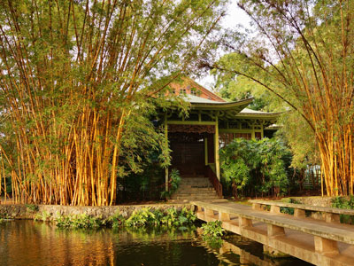
Eric Tessmer, CC BY 3.0, via Wikimedia Commons; Image Size Adjusted

Moanalua Gardens
Privately owned public park known for its iconic monkeypod trees, historic Kamehameha V Cottage, and the annual Prince Lot Hula Festival.
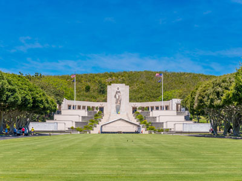
Gerald Watanabe, CC BY-SA 4.0, via Wikimedia Commons; Image Size Adjusted

National Memorial Cemetery of the Pacific
National military cemetery honoring American service members through memorials, historic monuments, scenic overlooks, and the final resting places of veterans from multiple conflicts.
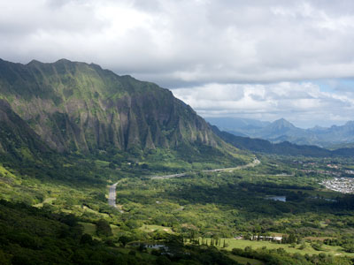
Lukas from Tokyo, Japan, CC BY 2.0, via Wikimedia Commons; Image Size Adjusted

Nu'uanu Pali
Scenic mountain overlook offering sweeping views of Oʻahu’s Windward Coast and steeped in Hawaiian history as the site of a pivotal 1795 battle.
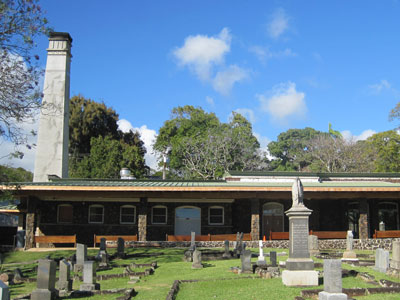
Joel Bradshaw, Public domain, via Wikimedia Commons; Image Size Adjusted

Oahu Cemetery
Historic burial grounds featuring 19th-century grave art, manicured landscapes, and a chapel designed by a renowned architect.

Monimoo (mkbacon), CC BY-SA 4.0, via Wikimedia Commons; Image Size Adjusted

Queen Emma's Summer Home / Hānaiakamalama
Historic royal residence featuring Victorian furnishings, Hawaiian artifacts, and lush gardens preserved as a cultural museum.
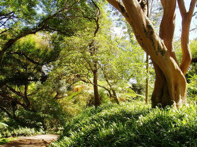
Daderot., CC BY-SA 3.0, via Wikimedia Commons; Image Size Adjusted

Wahiawa Botanical Garden
Tropical forest garden showcasing native Hawaiian and exotic plants in a cool upland ravine setting.
Overview
Honolulu is the capital and largest city of Hawaii, on the south shore of Oahu, with about 350,000 residents and nearly a million in the urban area. It is the westernmost and southernmost major city in the United States and the main gateway to the islands, with a mix of Asian, Pacific and Western cultures seen in its food, festivals and neighborhoods. Honolulu means "sheltered harbor," and the city grew around its protected deep-water port.
Visitors come to Honolulu for Waikiki Beach, for the hike up Diamond Head, for Pearl Harbor and Iolani Palace, and for a warm tropical climate that makes it one of the most popular destinations in the world. It is also a major business center for the Pacific, home to the United States Indo-Pacific Command, and the capital of the 50th state.
History
Hawaiians had villages around the harbor for centuries before Captain William Brown of Britain entered it in 1794. Kamehameha I moved his court to the area in 1804, and Kamehameha III made Honolulu the capital of the Hawaiian Kingdom in 1845. The monarchy was overthrown in 1893, Hawaii became a U.S. territory in 1900, and Japan's attack on Pearl Harbor on December 7, 1941, drew the United States into World War II. Hawaii became the 50th state in 1959.
Sightseeing and Popular Landmarks
Downtown Honolulu includes Iolani Palace, the only royal palace in the United States, the Hawaii State Capitol, Kawaiahao Church and the statue of Kamehameha I. Downtown is also home to Chinatown, which has markets and restaurants. Nuuanu Pali Lookout, Manoa Falls and Hanauma Bay are popular scenic stops outside the city center.
Culture and Museums
The Bishop Museum, founded in 1889, is Hawaii's largest museum, with Hawaiian and Pacific collections. Other museums include the Honolulu Museum of Art and its Shangri La estate, the Hawaii State Art Museum, Queen Emma Summer Palace, and the Mauna Ala Royal Mausoleum. The National Memorial Cemetery of the Pacific in Punchbowl Crater honors American service members.
Parks
Honolulu's parks include Kapiolani Regional Park, Ala Moana Beach Park, Foster Botanical Garden, and the gardens at Lyon Arboretum, Hoomaluhia Botanical Garden and Moanalua Gardens. Trails in the Koolau Range and the Makiki Valley, along with Diamond Head State Monument, give hikers views over the city.
Sports
Honolulu has no major league professional sports teams, but the University of Hawaii Rainbow Warriors and Rainbow Wahine, especially volleyball and football, are widely followed. The city hosts the Sony Open PGA Tour event each January and the Honolulu Marathon each December.
Seasons and Weather
Honolulu has a warm tropical climate with highs in the low to mid 80s°F year-round and steady trade winds. The wettest months are November through March, and the leeward south shore receives only about 17 to 25 inches of rain a year, far less than the mountains behind it. Hurricane season runs from June through November.
This article uses material from Wikipedia as well as information from official tourism and institutional sources. Key references include Hawaii Tourism Authority, Go Honolulu, City and County of Honolulu, World War II Valor in the Pacific National Monument, University of Hawaii, and National Weather Service Honolulu. Wikipedia material is from the article "Honolulu", released under the Creative Commons Attribution-Share-Alike License 3.0.
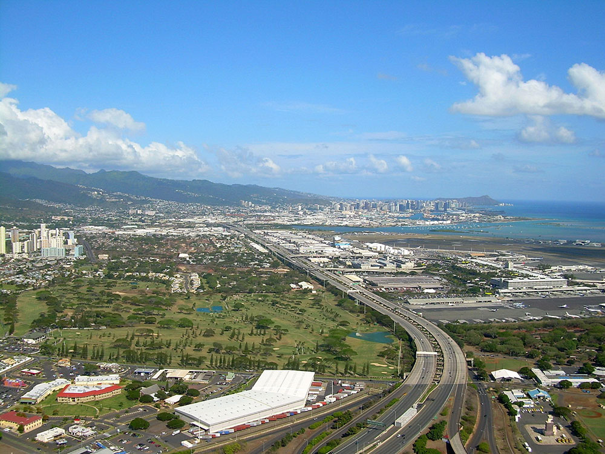

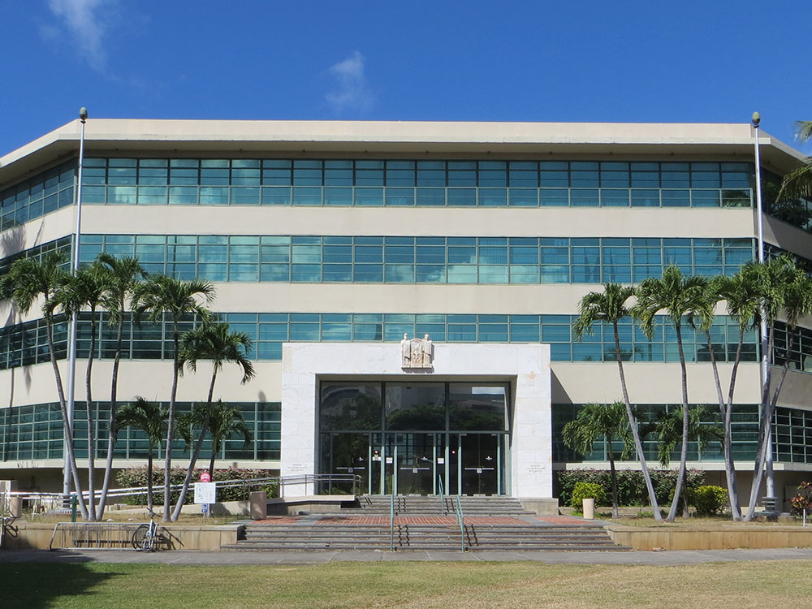